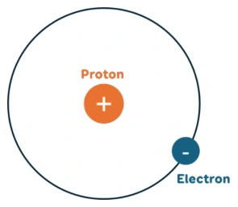

Bài tập — Bài 1 — Thuyết electron và bảo toàn điện tích
Hệ bài tập được biên soạn theo các dạng xuất hiện trong bộ tài liệu Vật lí 11 của dự án. Câu hỏi được giữ ngắn, trực tiếp; độ khó tăng dần và không cố tình thêm dữ kiện gây nhiễu.
Phần A — Trắc nghiệm 4 lựa chọn
Bài 1 — Mức 1 — Nhận biết
Một vật trung hòa nhận thêm \(5\cdot10^{12}\) electron. Điện tích của vật là
A. \(+8,0\cdot10^{-7}\) C.
B. \(-8,0\cdot10^{-7}\) C.
C. \(+3,2\cdot10^{-7}\) C.
D. \(-3,2\cdot10^{-7}\) C.
Đáp án và lời giải
Chọn B. \(q=-Ne=-5\cdot10^{12}\cdot1,6\cdot10^{-19}=-8,0\cdot10^{-7}\) C.
Bài 2 — Mức 1 — Nhận biết
Trong quá trình nhiễm điện thông thường của vật rắn, hạt thường dịch chuyển từ vật này sang vật khác là
A. proton.
B. neutron.
C. electron.
D. hạt nhân.
Đáp án và lời giải
Chọn C. Electron ngoài cùng có thể dịch chuyển; hạt nhân gắn trong mạng vật chất.
Bài 3 — Mức 1 — Nhận biết
Một hệ cô lập gồm hai vật có điện tích ban đầu \(+3\,\mu\)C và \(-1\,\mu\)C. Sau khi cho tương tác rồi tách ra, tổng điện tích của hệ bằng
A. \(-4\,\mu\)C.
B. \(-2\,\mu\)C.
C. \(+2\,\mu\)C.
D. \(+4\,\mu\)C.
Đáp án và lời giải
Chọn C. Tổng điện tích hệ cô lập được bảo toàn: \(+3-1=+2\,\mu\)C.
Bài 4 — Mức 1 — Nhận biết
Vật dẫn điện khác vật cách điện chủ yếu ở chỗ
A. vật dẫn luôn mang điện dương.
B. vật dẫn có các hạt mang điện tự do có thể dịch chuyển dễ hơn.
C. vật cách điện không chứa điện tích.
D. vật dẫn không có electron.
Đáp án và lời giải
Chọn B.
Phần B — Đúng/Sai
Bài 5 — Mức 2 — Thông hiểu
Xét các phát biểu về điện tích:
a) Điện tích của electron là âm.
b) Độ lớn điện tích electron bằng điện tích proton.
c) Một vật nhiễm điện âm thường là vật thừa electron.
d) Trong hệ cô lập, tổng đại số điện tích có thể tự tăng lên mà không có trao đổi với bên ngoài.
Đáp án và lời giải
a) Đúng. b) Đúng về độ lớn. c) Đúng. d) Sai theo định luật bảo toàn điện tích.
Bài 6 — Mức 2 — Thông hiểu
Về các cách nhiễm điện:
a) Cọ xát có thể làm electron chuyển từ vật này sang vật kia.
b) Tiếp xúc với vật nhiễm điện có thể làm điện tích phân bố lại.
c) Hưởng ứng đòi hỏi bắt buộc hai vật chạm nhau.
d) Sau hưởng ứng, điện tích trong vật dẫn có thể phân bố không đều.
Đáp án và lời giải
a) Đúng. b) Đúng. c) Sai: hưởng ứng xảy ra do tác dụng điện từ xa, không cần tiếp xúc. d) Đúng.
Phần C — Trả lời ngắn
Bài 7 — Mức 3 — Vận dụng
Một vật mất \(2,5\cdot10^{13}\) electron. Tính điện tích của vật.
Đáp án và lời giải
Mất electron nên vật dương: \(q=Ne=2,5\cdot10^{13}\cdot1,6\cdot10^{-19}=4,0\cdot10^{-6}\) C \(=4\,\mu\)C.
Bài 8 — Mức 3 — Vận dụng
Điện tích của một vật là \(-3,2\cdot10^{-8}\) C. Vật thừa bao nhiêu electron?
Đáp án và lời giải
\(N=|q|/e=3,2\cdot10^{-8}/1,6\cdot10^{-19}=2,0\cdot10^{11}\) electron.
Bài 9 — Mức 3 — Vận dụng
Hai quả cầu kim loại giống nhau mang điện \(q_1=+8\,\mu\)C và \(q_2=-2\,\mu\)C. Cho tiếp xúc rồi tách xa. Bỏ qua mất mát điện tích. Tính điện tích mỗi quả cầu sau cùng.
Đáp án và lời giải
Tổng điện tích \(Q=+6\,\mu\)C. Hai quả cầu giống nhau nên sau tiếp xúc điện tích chia đều: \(q'_1=q'_2=Q/2=+3\,\mu\)C.
Phần D — Vận dụng và vận dụng cao
Bài 10 — Mức 4 — Vận dụng cao
Ba quả cầu kim loại giống nhau A, B, C có điện tích ban đầu lần lượt \(+6\,\mu\)C, \(0\), \(-3\,\mu\)C. Cho A tiếp xúc B rồi tách ra; sau đó cho B tiếp xúc C rồi tách ra. Tính điện tích cuối cùng của A, B, C.
Đáp án và lời giải
Lần 1, A và B giống nhau nên chia đều tổng \(6\,\mu\)C: \(q_A=q_B=3\,\mu\)C.
Lần 2, B có \(+3\,\mu\)C tiếp xúc C có \(-3\,\mu\)C. Tổng bằng 0 nên sau khi tách: \(q_B=q_C=0\).
A không tham gia lần 2 nên vẫn \(+3\,\mu\)C.
Kết quả: \(q_A=+3\,\mu\)C, \(q_B=0\), \(q_C=0\). Tổng cuối vẫn \(+3\,\mu\)C, đúng bằng tổng ban đầu.
Ngân hàng bài tập mở rộng
Nhận biết — Trả lời ngắn
Bài 11
Bốn quả cầu kim loại có kích thước giống nhau mang các điện tích \(q_1=2{,}1\,\mu\mathrm C\), \(q_2=264\cdot10^{-7}\,\mathrm C\), \(q_3=-5{,}9\,\mu\mathrm C\) và \(q_4=-3{,}5\cdot10^{-5}\,\mathrm C\). Cho bốn quả cầu đồng thời tiếp xúc nhau rồi tách chúng ra. Điện tích của mỗi quả cầu bằng bao nhiêu \(\mu\mathrm C\)?
Đáp án và lời giải
Đáp án: \(-3{,}1\) Hướng dẫn giải:
Dùng bảo toàn điện tích và lượng tử hóa điện tích \(q=ne\), với \(e=1{,}6\times10^{-19}\) C.
Vậy kết quả cần tìm là \(-3{,}1\).
Bài 12
Biết khoảng cách từ electron trong nguyên tử hydrogen đến hạt nhân là \(5\cdot10^{-11}\,\mathrm m\), điện tích của electron và proton có độ lớn bằng nhau \(1{,}6\cdot10^{-19}\,\mathrm C\). Lấy \(\varepsilon_0=8{,}85\cdot10^{-12}\,\mathrm{C^2/(N\,m^2)}\). Lực điện tương tác giữa electron và proton là bao nhiêu (theo đơn vị nN và làm tròn đến hai chữ số thập phân)?
Đáp án và lời giải
Đáp án: \(0{,}92\,\mathrm{nN}\).
Hướng dẫn giải: Theo biểu thức trong nguồn, \(F=\dfrac{|q_eq_p|}{4\pi\varepsilon_0r^2}=\dfrac{(1{,}6\cdot10^{-19})^2}{4\pi\cdot8{,}85\cdot10^{-12}(5\cdot10^{-11})^2}\approx9{,}21\cdot10^{-10}\,\mathrm N\approx0{,}92\,\mathrm{nN}\).
Bài 13
Biết điện tích của electron \(q_e=-1{,}6\cdot10^{-19}\,\mathrm C\). Tính lực tương tác giữa hai electron ở cách nhau \(1{,}0\cdot10^{-10}\,\mathrm m\) trong chân không (theo đơn vị nN và làm tròn đến hàng đơn vị).
Đáp án và lời giải
Đáp án: \(23\,\mathrm{nN}\).
Hướng dẫn giải: Theo định luật Coulomb, \(F=k\dfrac{|q_eq_e|}{r^2}=9\cdot10^9\dfrac{(1{,}6\cdot10^{-19})^2}{(1{,}0\cdot10^{-10})^2}=2{,}304\cdot10^{-8}\,\mathrm N\approx23\,\mathrm{nN}\).
Nhận biết — Trắc nghiệm 4 lựa chọn
Bài 14
Lực tương tác tĩnh điện giữa hai điện tích điểm không phụ thuộc vào những yếu tố nào?
A. Môi trường đặt hai điện tích điểm.
B. Điện tích của hai điện tích điểm.
C. Khoảng cách giữa hai điện tích điểm.
D. Số lượng electron có trong điện tích điểm.
Đáp án và lời giải
Đáp án: D Hướng dẫn giải:
Dùng bảo toàn điện tích và lượng tử hóa điện tích \(q=ne\), với \(e=1{,}6\times10^{-19}\) C.
Đối chiếu kết quả với các lựa chọn, phương án phù hợp là D. Số lượng electron có trong điện tích điểm.
Bài 15
Một điện tích âm không thể
A. hút một điện tích dương.
B. tương tác điện với một vật khác trung hoà về điện.
C. đẩy một điện tích âm khác.
D. làm một vật trung hoà về điện nhiễm điện tích dương thông qua tiếp xúc.
Đáp án và lời giải
Đáp án: D Hướng dẫn giải:
Dùng bảo toàn điện tích và lượng tử hóa điện tích \(q=ne\), với \(e=1{,}6\times10^{-19}\) C.
Đối chiếu kết quả với các lựa chọn, phương án phù hợp là D. làm một vật trung hoà về điện nhiễm điện tích dương thông qua tiếp xúc.
Bài 16
Một nhóm học sinh làm thí nghiệm về sự nhiễm điện của ba vật A, B, C. Khi các vật A và B được đưa lại gần nhau, chúng hút nhau. Khi các vật B và C được đưa lại gần nhau, chúng đẩy nhau. Phát biểu nào sau đây là đúng?
A. Vật A và C mang điện cùng dấu.
B. Vật A và C mang điện trái dấu.
C. Cả ba vật đều mang điện cùng dấu.
D. Vật A trái dấu với C hoặc A trung hoà.
Đáp án và lời giải
Đáp án: D Hướng dẫn giải: A, B hút nhau: (1) A mang điện dương (hoặc âm), B mang điện âm (hoặc dương) (2) A trung hòa, B mang điện, chúng hút nhau do hưởng ứng. (3) B trung hòa, A mang điện, chúng hút nhau do hưởng ứng. B, C đẩy nhau: (4) B, C đều mang điện dương (hoặc âm) Giao giữa các điều kiện, ta thấy (4) không mâu thuẫn với (1), (2). Vì vậy chọn D.
Bài 17
Hai quả cầu kim loại cùng kích thước, cùng khối lượng được tích điện và được treo bằng hai dây. Thoạt đầu chúng hút nhau, sau khi cho tiếp xúc chúng đẩy nhau. Kết luận nào sau đây đúng về hai quả cầu trước khi tiếp xúc?
A. Cả hai tích điện dương.
B. Cả hai tích điện âm.
C. Hai quả cầu tích điện có độ lớn bằng nhau nhưng trái dấu.
D. Hai quả cầu tích điện có độ lớn không bằng nhau và trái dấu.
Đáp án và lời giải
Đáp án: D Hướng dẫn giải:
Dùng bảo toàn điện tích và lượng tử hóa điện tích \(q=ne\), với \(e=1{,}6\times10^{-19}\) C.
Đối chiếu kết quả với các lựa chọn, phương án phù hợp là D. Hai quả cầu tích điện có độ lớn không bằng nhau và trái dấu.
Bài 18
Quả cầu trung hoà về điện sau khi tiếp xúc với thanh nhiễm điện âm sẽ trở nên nhiễm điện âm và hút được tóc. Sự nhiễm điện của quả cầu là nhiễm điện do
A. cọ xát.
B. tiếp xúc.
C. hưởng ứng.
D. hút đẩy.
Đáp án và lời giải
Đáp án: B Hướng dẫn giải:
Dùng bảo toàn điện tích và lượng tử hóa điện tích \(q=ne\), với \(e=1{,}6\times10^{-19}\) C.
Đối chiếu kết quả với các lựa chọn, phương án phù hợp là B. tiếp xúc.
Bài 19
Trong những cách sau cách nào có thể làm nhiễm điện cho một vật?
A. Cọ chiếc vỏ bút lên tóc.
B. Đặt một thanh nhựa gần một vật đã nhiễm điện.
C. Đặt một vật gần nguồn điện.
D. Cho một vật tiếp xúc với viên pin.
Đáp án và lời giải
Đáp án: A Hướng dẫn giải:
Dùng bảo toàn điện tích và lượng tử hóa điện tích \(q=ne\), với \(e=1{,}6\times10^{-19}\) C.
Đối chiếu kết quả với các lựa chọn, phương án phù hợp là A. Cọ chiếc vỏ bút lên tóc.
Bài 20
Vào mùa hanh khô, nhiều khi kéo áo len qua đầu, ta thấy có tiếng nổ “tách tách”. Đó là do
A. nhiễm điện do tiếp xúc.
B. nhiễm điện do cọ xát.
C. nhiễm điện do hưởng ứng.
D. các sợi len bị kéo dãn.
Đáp án và lời giải
Đáp án: B Hướng dẫn giải:
Dùng bảo toàn điện tích và lượng tử hóa điện tích \(q=ne\), với \(e=1{,}6\times10^{-19}\) C.
Đối chiếu kết quả với các lựa chọn, phương án phù hợp là B. nhiễm điện do cọ xát.
Bài 21
Bốn vật kích thước nhỏ A, B, C, D nhiễm điện. Vật A hút vật B nhưng đẩy vật C, vật C hút vật D. Biết A nhiễm điện dương. B, C, D nhiễm điện lần lượt là
A. âm, âm, dương.
B. âm, dương, dương.
C. âm, dương, âm.
D. dương, âm, dương.
Đáp án và lời giải
Đáp án: C Hướng dẫn giải:
Dùng bảo toàn điện tích và lượng tử hóa điện tích \(q=ne\), với \(e=1{,}6\times10^{-19}\) C.
Đối chiếu kết quả với các lựa chọn, phương án phù hợp là C. âm, dương, âm.
Bài 22
Trong các cách nhiễm điện sau đây, cách nào thì tổng đại số điện tích trên vật được nhiễm điện không thay đổi?
Cách I. cọ xát; Cách II. tiếp xúc; Cách III. hưởng ứng.
A. I.
B. II.
C. III.
D. Không có cách nào.
Đáp án và lời giải
Đáp án: C Hướng dẫn giải:
Dùng bảo toàn điện tích và lượng tử hóa điện tích \(q=ne\), với \(e=1{,}6\times10^{-19}\) C.
Đối chiếu kết quả với các lựa chọn, phương án phù hợp là C. III.
Bài 23
Xét mô hình nguyên tử Rutherford cho nguyên tử hydrogen được mô tả như hình dưới. Lực giữ cho electron chuyển động tròn quanh hạt nhân là ...(1)... giữa proton và electron, lực này là ...(2)... của proton đặt lên electron và nó đóng vai trò là lực hướng tâm. Phương của lực có phương ...(3)... (đường nối của proton và electron), chiều hướng vào ...(4)....
Hãy chọn từ thích hợp ở khung để điền vào chỗ trống để có một mô tả đúng.
(a) lực tương tác tĩnh điện; (b) lực đẩy; (c) lực hút; (d) bán kính; (e) tâm quỹ đạo; (f) xiên; (g) electron.

A. (1) – (b), (2) – (a), (3) – (f), (4) – (g).
B. (1) – (c), (2) – (c), (3) – (d), (4) – (g).
C. (1) – (b), (2) – (a), (3) – (f), (4) – (e).
D. (1) – (a), (2) – (c), (3) – (d), (4) – (e).
Đáp án và lời giải
Đáp án: D Hướng dẫn giải:
Dùng bảo toàn điện tích và lượng tử hóa điện tích \(q=ne\), với \(e=1{,}6\times10^{-19}\) C.
Đối chiếu kết quả với các lựa chọn, phương án phù hợp là D. (1) – (a), (2) – (c), (3) – (d), (4) – (e).
Bài 24
Có hai quả cầu giống nhau cùng mang điện tích có độ lớn như nhau, khi đưa chúng lại gần thì chúng đẩy nhau. Cho chúng tiếp xúc nhau, sau đó tách chúng ra một khoảng nhỏ thì chúng
A. hút nhau.
B. đẩy nhau.
C. có thể hút hoặc đẩy nhau.
D. không tương tác nhau.
Đáp án và lời giải
Đáp án: B Hướng dẫn giải:
Dùng bảo toàn điện tích và lượng tử hóa điện tích \(q=ne\), với \(e=1{,}6\times10^{-19}\) C.
Trước khi tiếp xúc, hai quả cầu đẩy nhau và có độ lớn điện tích bằng nhau nên \(q_1=q_2\).
Sau khi tiếp xúc: \(q'_1=q'_2=\dfrac{q_1+q_2}{2}=q_1\).
Hai quả cầu vẫn tích điện cùng dấu với ban đầu nên vẫn đẩy nhau.
Đối chiếu kết quả với các lựa chọn, phương án phù hợp là B. đẩy nhau.
Bài 25
Một nguyên tử hydrogen chỉ chứa một proton và một electron. Biết bán kính trung bình của nguyên tử hydrogen bằng \(5\cdot10^{-9}\,\mathrm{cm}\) và điện tích electron là \(q_e=-1{,}6\cdot10^{-19}\,\mathrm C\). Lực tĩnh điện giữa hạt nhân và electron trong nguyên tử đó là
A. lực đẩy, có độ lớn \(9{,}2\cdot10^{-8}\,\mathrm N\).
B. lực đẩy, có độ lớn \(2{,}9\cdot10^{-8}\,\mathrm N\).
C. lực hút, có độ lớn \(9{,}2\cdot10^{-8}\,\mathrm N\).
D. lực hút, có độ lớn \(2{,}9\cdot10^{-8}\,\mathrm N\).
Đáp án và lời giải
Đáp án: C.
Hướng dẫn giải: Proton và electron trái dấu nên hút nhau. Theo định luật Coulomb với \(r=5\cdot10^{-11}\,\mathrm m\), \(F=k\dfrac{e^2}{r^2}\approx9{,}2\cdot10^{-8}\,\mathrm N\).
Nhận biết — Đúng/Sai
Bài 26
Hai quả cầu A, B có kích thước nhỏ được đặt cách nhau một khoảng 12 cm trong chân không. Biết quả cầu A có điện tích \(-3{,}2\cdot10^{-7}\,\mathrm C\) và quả cầu B có điện tích \(2{,}4\cdot10^{-7}\,\mathrm C\). Cho hai quả cầu tiếp xúc với nhau, sau đó đặt cách nhau một khoảng như lúc đầu.
a) Hằng số điện môi của chân không bằng 1.
b) Sau khi tiếp xúc, hai quả cầu đều mang điện tích \(-0{,}4\cdot10^{-7}\,\mathrm C\).
c) Lực tương tác giữa hai quả cầu trước khi tiếp xúc có độ lớn là \(0{,}048\,\mathrm N\).
d) Sau khi tiếp xúc, lực tương tác của hai quả cầu giảm 8 lần.
Đáp án và lời giải
Kết luận: a) Đúng; b) Đúng; c) Đúng; d) Sai.
Hướng dẫn giải: a) Chân không có hằng số điện môi bằng 1.
b) Sau tiếp xúc, do hai quả cầu giống nhau: \(q'=\dfrac{q_A+q_B}{2}=\dfrac{-3{,}2\cdot10^{-7}+2{,}4\cdot10^{-7}}{2}=-0{,}4\cdot10^{-7}\,\mathrm C\), nên b) đúng.
c) Trước tiếp xúc: \(F=k\dfrac{|q_Aq_B|}{r^2}=9\cdot10^9\dfrac{|-3{,}2\cdot10^{-7}\cdot2{,}4\cdot10^{-7}|}{0{,}12^2}=0{,}048\,\mathrm N\), nên c) đúng.
d) Sau tiếp xúc: \(\dfrac{F'}{F}=\dfrac{(q')^2}{|q_Aq_B|}=\dfrac{1}{48}\). Lực giảm 48 lần, không phải 8 lần, nên d) sai.
Bài 27
Cấu trúc nguyên tử helium gồm hạt nhân (hai proton và hai neutron) với hai electron nằm ở lớp vỏ. Biết khoảng cách từ electron đến hạt nhân là \(2{,}94\cdot10^{-11}\,\mathrm m\); điện tích của electron và proton lần lượt là \(q_e=-1{,}6\cdot10^{-19}\,\mathrm C\), \(q_p=1{,}6\cdot10^{-19}\,\mathrm C\); khối lượng electron là \(m_e=9{,}1\cdot10^{-31}\,\mathrm{kg}\).
a) Hạt nhân của nguyên tử helium trung hoà về điện.
b) Lực hút giữa proton và electron giúp electron chuyển động xung quanh hạt nhân.
c) Lực điện tương tác giữa hạt nhân nguyên tử helium với một electron nằm trong lớp vỏ có độ lớn khoảng \(0{,}53\,\mu\mathrm N\).
d) Nếu coi electron chuyển động tròn đều quanh hạt nhân dưới tác dụng của lực điện thì tốc độ góc của electron là \(4{,}14\cdot10^{6}\,\mathrm{rad/s}\).
Đáp án và lời giải
Đáp án: a) Sai; b) Đúng; c) Đúng; d) Sai.
Hướng dẫn giải:
a) Sai. Hạt nhân heli có hai proton nên mang điện tích \(+2e\), không trung hòa điện.
b) Đúng. Trong mô hình đơn giản đang xét, lực hút tĩnh điện giữa hạt nhân và electron đóng vai trò lực hướng tâm.
c) Đúng. Áp dụng Coulomb \(F=k|q_1q_2|/r^2\) với dữ kiện của bài cho \(F\approx0{,}53\ \mu\text{N}\).
d) Sai. Từ \(F=m\omega^2r\) suy ra \(\omega=\sqrt{F/(mr)}\approx1{,}41\times10^{17}\ \text{rad/s}\), khác xa giá trị nêu trong phát biểu.
Bài 28
Xét hai quả cầu kim loại nhỏ giống nhau mang các điện tích \(q_1\) và \(q_2\) được đặt trong không khí cách nhau 2 cm, đẩy nhau bằng một lực có độ lớn \(2{,}7\cdot10^{-4}\,\mathrm N\). Cho hai quả cầu tiếp xúc với nhau rồi lại đưa về vị trí ban đầu thì lực đẩy giữa chúng có độ lớn \(3{,}6\cdot10^{-4}\,\mathrm N\).
a) Trước khi tiếp xúc, hai điện tích \(q_1\) và \(q_2\) tích điện cùng dấu.
b) Tổng điện tích trước và sau khi cho hai quả cầu tiếp xúc là khác nhau.
c) Sau khi tiếp xúc, nhúng hai quả cầu vào dầu có hằng số điện môi là 2 thì lực đẩy giữa chúng không đổi so với ban đầu.
d) Điện tích \(q_1\) có thể nhận một trong bốn giá trị \(\pm2\cdot10^{-9}\,\mathrm C\) hoặc \(\pm6\cdot10^{-9}\,\mathrm C\).
Đáp án và lời giải
Kết luận: a) Đúng; b) Sai; c) Sai; d) Đúng.
Hướng dẫn giải: a) Hai quả cầu đẩy nhau nên \(q_1,q_2\) cùng dấu.
b) Hệ cô lập về điện nên tổng điện tích được bảo toàn khi hai quả cầu tiếp xúc; phát biểu b) sai.
c) Khi đưa vào dầu có hằng số điện môi \(\varepsilon=2\), với khoảng cách và điện tích không đổi, lực Coulomb giảm 2 lần; phát biểu c) sai.
d) Trước tiếp xúc: \(F=k\dfrac{|q_1q_2|}{r^2}\Rightarrow q_1q_2=1{,}2\cdot10^{-17}\,\mathrm{C^2}\). Sau tiếp xúc, \(q'_1=q'_2=(q_1+q_2)/2\) và từ \(F'=3{,}6\cdot10^{-4}\,\mathrm N\) suy ra \(|q_1+q_2|=8\cdot10^{-9}\,\mathrm C\). Giải hệ cho \(|q_1|,|q_2|\) là \(2\cdot10^{-9}\,\mathrm C\) và \(6\cdot10^{-9}\,\mathrm C\), cùng dấu. Vì vậy \(q_1\) có thể là một trong bốn giá trị \(\pm2\cdot10^{-9}\,\mathrm C\), \(\pm6\cdot10^{-9}\,\mathrm C\); d) đúng.
Nhận biết — Trắc nghiệm 4 lựa chọn
Bài 29
Khi cọ xát lược nhựa với tóc, lược nhựa sẽ bị nhiễm điện và hút các mẩu giấy vụn. Đây là hiện tượng nhiễm điện do
A. cọ xát.
B. tiếp xúc.
C. hưởng ứng.
D. hút đẩy.
Đáp án và lời giải
Đáp án: A Hướng dẫn giải:
Dùng bảo toàn điện tích và lượng tử hóa điện tích \(q=ne\), với \(e=1{,}6\times10^{-19}\) C.
Đối chiếu kết quả với các lựa chọn, phương án phù hợp là A. cọ xát.
Bài 30
Dùng vải cọ xát một đầu thanh nhựa rồi đưa lại gần hai vật nhẹ A, B thì thấy thanh nhựa hút cả hai vật này. Hai vật này không thể là
A. hai vật không nhiễm điện.
B. hai vật nhiễm điện cùng loại.
C. hai vật nhiễm điện khác loại.
D. một vật nhiễm điện, một vật không nhiễm điện.
Đáp án và lời giải
Đáp án: C Hướng dẫn giải: Thanh nhựa sau khi bị cọ xát, nhiễm điện dương (hoặc âm) A bị hút nghĩa là (1) A mang điện âm (hoặc dương) (2) A trung hòa và bị hút do hưởng ứng B bị hút nghĩa là (3) B mang điện âm (hoặc dương) (4) B trung hòa và bị hút do hưởng ứng (2)&(4) tương đương đáp án A. (1)&(3) tương đương đáp án B. (1)&(4) hoặc (2)&(3) tương đương đáp án D. Đáp án C không thể đúng.
Bài 31
Trong các hiện tượng sau, hiện tượng nào không liên quan đến nhiễm điện?
A. Lược dính rất nhiều tóc khi chải đầu.
B. Chim thường xù lông về mùa rét.
C. Ô tô chở nhiên liệu thường thả một sợi dây xích kéo trên mặt đường.
D. Sét giữa hai đám mây hoặc giữa đám mây với mặt đất.
Đáp án và lời giải
Đáp án: B Hướng dẫn giải:
Dùng bảo toàn điện tích và lượng tử hóa điện tích \(q=ne\), với \(e=1{,}6\times10^{-19}\) C.
Đối chiếu kết quả với các lựa chọn, phương án phù hợp là B. Chim thường xù lông về mùa rét.
Bài 32
Có thể áp dụng định luật Coulomb để tính lực tương tác trong trường hợp tương tác
A. giữa hai thanh thủy tinh nhiễm đặt gần nhau.
B. giữa một thanh thủy tinh và một thanh nhựa nhiễm điện đặt gần nhau.
C. giữa hai quả cầu nhỏ tích điện đặt xa nhau.
D. điện giữa một thanh thủy tinh và một quả cầu lớn.
Đáp án và lời giải
Đáp án: C Hướng dẫn giải:
Dùng bảo toàn điện tích và lượng tử hóa điện tích \(q=ne\), với \(e=1{,}6\times10^{-19}\) C.
Đối chiếu kết quả với các lựa chọn, phương án phù hợp là C. giữa hai quả cầu nhỏ tích điện đặt xa nhau.
Bài 33
Có hai quả cầu giống nhau mang điện tích \(q_1\) và \(q_2\) có độ lớn như nhau, khi đưa chúng lại gần nhau thì chúng hút nhau. Cho chúng tiếp xúc nhau rồi tách chúng ra một khoảng thì chúng
A. hút nhau.
B. đẩy nhau.
C. có thể hút hoặc đẩy nhau.
D. không tương tác nhau.
Đáp án và lời giải
Đáp án: D Hướng dẫn giải:
Dùng bảo toàn điện tích và lượng tử hóa điện tích \(q=ne\), với \(e=1{,}6\times10^{-19}\) C.
Trước khi tiếp xúc, hai quả cầu hút nhau nên Sau khi tiếp xúc: ⇒Hai vật trung hoà về điện nên không tương tác nhau.
Đối chiếu kết quả với các lựa chọn, phương án phù hợp là D. không tương tác nhau.
Bài 34
Hai quả cầu kim loại giống nhau mang điện tích \(q_1\) và \(q_2\) với \(|q_1|=|q_2|\), đưa chúng lại gần thì chúng đẩy nhau. Nếu cho chúng tiếp xúc nhau rồi sau đó tách ra thì mỗi quả cầu sẽ mang điện tích
A. \(2q_1\).
B. \(0\).
C. \(q_1\).
D. \(q_1/2\).
Đáp án và lời giải
Đáp án: C.
Hướng dẫn giải: Hai quả cầu đẩy nhau và \(|q_1|=|q_2|\) nên \(q_1=q_2\). Sau khi tiếp xúc, \(q'_1=q'_2=\dfrac{q_1+q_2}{2}=q_1\).
Bài 35
Hai quả cầu kim loại nhỏ giống hệt nhau, mang các điện tích \(q_1\) và \(q_2=5q_1\), tác dụng lên nhau một lực bằng \(F\). Nếu cho chúng tiếp xúc với nhau rồi đưa đến các vị trí cũ thì tỉ số giữa lực tương tác lúc sau với lực tương tác lúc chưa tiếp xúc là
A. \(6/5\).
B. \(9/5\).
C. \(5/9\).
D. \(5/6\).
Đáp án và lời giải
Đáp án: B.
Hướng dẫn giải: Sau tiếp xúc, mỗi quả cầu có điện tích \(q'=(q_1+q_2)/2=3q_1\). Vì khoảng cách không đổi, \(\dfrac{F'}{F}=\dfrac{(3q_1)^2}{q_1(5q_1)}=\dfrac95\).